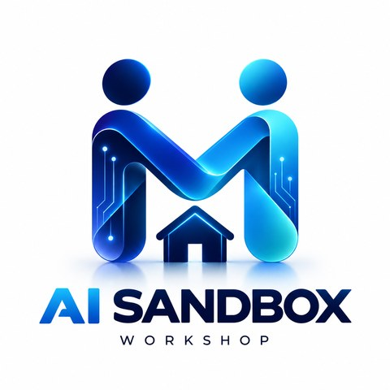

Click a card to customise · {{variables}} are fillable

A curated library of prompts for the AI Sandbox, each built as Role, Objective, Context, Key Requirements, Expected Output, and Testing & Quality. Choose what to create, attach your own documents, pick an expert role, audience, tone, one of 20 visual styles and the AI engine you use, fill in the blanks, then copy. Works with ChatGPT, Claude, Gemini, NotebookLM and Copilot.